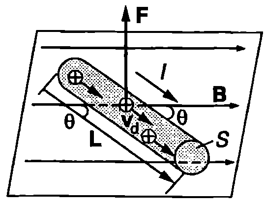
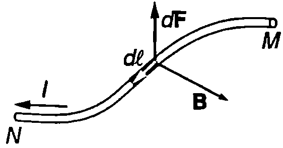
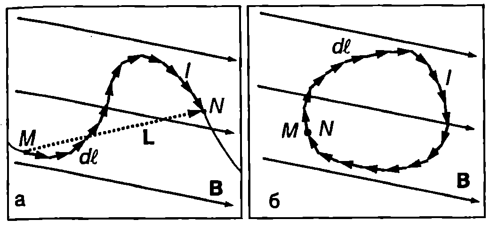
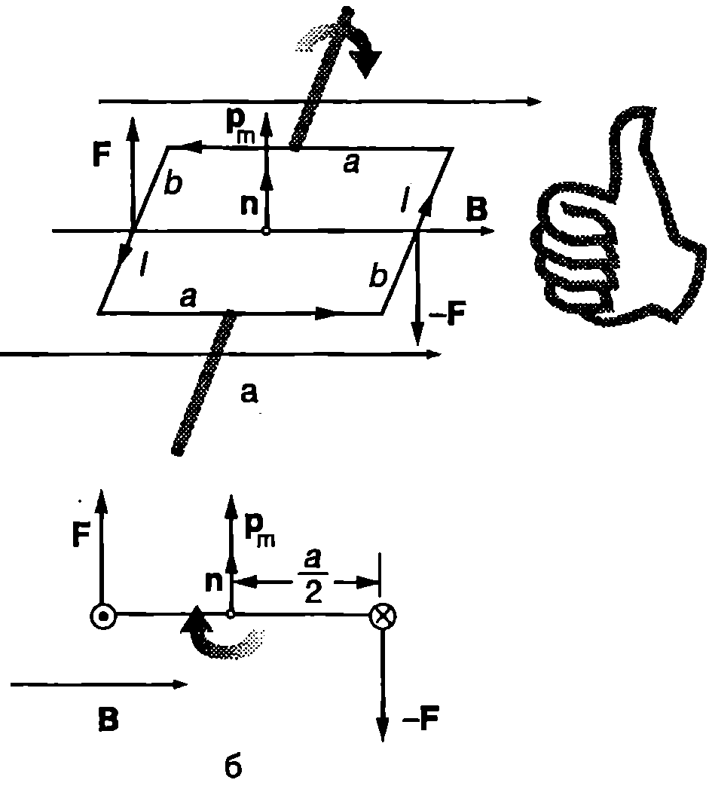
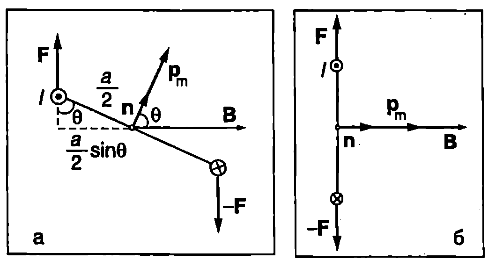
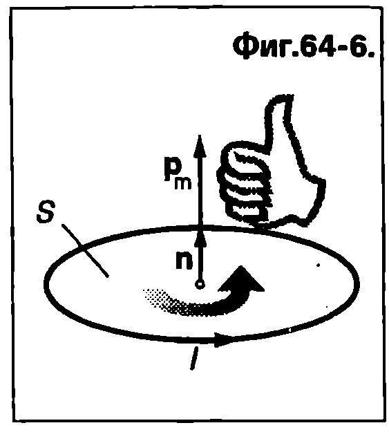

Ще определим магнитната сила $\vec F$, която действа на праволинеен проводник с дължина $L$ и напречно сечение $S$ (Фиг. \ref{fig:64.1}), по който тече ток $I$. Проводникът се намира в еднородно магнитно поле с индукция $\vec B$. За нагледност на чертежа останалите части от електрическата верига не са показани на Фиг. \ref{fig:64.1}. Ще смятаме, че свободните токови носители имат положителен заряд $q_0$ и се движат с постоянна скорост $\vec v_d$ (дрейфова скорост). На всеки токов носител действа магнитна сила $q_0 \vec v_d \times\vec B$. Магнитната сила, действаща на целия проводник, е $$\vec F = Nq_0 \vec v_d\times\vec B, $$ където $N$ е общият брой на токовите носители в проводника. Той е равен на произведението на обема $LS$ на проводника и концентрацията $n$ на свободните токови носители: $N = nLS$. Токът през напречното сечение на проводника е $I = nq_0 v_d S$ (вж. уравнение \eqref{eq:52.2} на стр. 43), откъдето изразяваме големината на дрейфовата скорост $\displaystyle v_d = \frac{I}{nq_0S}$. Това уравнение се записва във векторна форма: $\displaystyle\vec v_d= \frac{I}{nq_0S}\frac{\vec L}{L}$, където $\vec L$ e вектор с модул, равен на дължината $L$ на проводника. Векторът $\vec L$ има същата посока, както дрейфовата скорост на положителните заряди $\vec v_d$, т.е. посоката на тока (Фиг. \ref{fig:64.1}). Заместваме $N$ и $\vec v_d$ в уравнение \eqref{eq:64.1} и получаваме $$\vec F = I \vec L \times\vec B $$ Посоката на силата $\vec F$ се определя по правилото на дясната ръка. Големината й е

`Фиг. 64.1`
$$F = I L B\sin\theta $$ където $\theta$ е ъгълът между векторите $\vec L$ и $\vec B$, т.е. ъгълът, който проводникът сключва с индукционните линии на еднородното магнитно поле. Магнитната сила е максимална, $F_{\max} = ILB$, при $\theta = 90^\circ$, т.е. когато проводникът е перпендикулярен на индукционните линии. Магнитната сила е равна на нула, когато проводникът е успореден на индукционните линии (при $\theta = 0$). За да се определи магнитната сила, действаща на проводник с произволна форма, поставен в нееднородно магнитно поле, проводникът мислено се разделя на много малки елементи. Всеки от тях се разглежда като праволинеен проводник с дължина $dl$, поставен в еднородно поле с магнитна индукция $\vec B$. (Тъй като дължината $dl$ на елемента е много (безкрайно) малка, изменението на полето на разстояние $dl$ не се отчита.) От уравнение \eqref{eq:64.2} следва, че силата $d\vec F$, действаща на безкрайно малък елемент от проводника (Фиг. \ref{fig:64.2}), е

`Фиг. 64.2`
$$d\vec F = I d\vec l\times \vec B $$ Магнитната сила $\vec F$, действаща на целия проводник, в векторна сума от силите, приложени към всички малки елементи, на които е разделен проводникът, т.е. тя се определя чрез интегриране на уравнение \eqref{eq:64.4}: $$\vec F = I \int_M^N d\vec l \times\vec B $$ където $M$ и $N$ са двете крайни точки на проводника.
Пример 64.1
а) Проводник с произволна форма, по който тече ток $I$, е поставен в еднородно магнитно поле с индукция $\vec B$. Изразете магнитната сила $\vec F$, която действа на участък $MN$ от проводника, чрез вектора $\vec L$, свързващ началната точка $M$ и крайната точка $N$ на този участък (Фиг. \ref{fig:64.3}a).
б) Определете магнитната сила, действаща на затворен токов контур с произволна форма, поставен в еднородно магнитно поле. \end{psexample}

`Фиг. 64.3`
Решение
а) Магнитната сила $\vec F$, действаща на участъка $MN$ от проводника, се определя от уравнение \eqref{eq:64.5}. Тъй като магнитното поле е еднородно ($\vec B = \text{const}$), векторът $\vec B$ може да се изнесе извън интеграла: $$\vec F = \left(\int_{M}^{N} I d\vec l\right) \times \vec B$$ Интегралът $\int_{M}^{N} d\vec l$ е равен на векторната сума от всички вектори $d\vec l$, изразяващи безкрайно малките елементи, на които е разделен участъкът $MN$ от проводника. Съгласно с правилото за събиране на вектори тази сума е вектор с начало в точка $M$ и край в точка $N$, т.е. $$\int_{M}^{N} d\vec l = \vec L$$ Заместваме интеграла с $\vec L$ и получаваме $$\vec F = I \vec L \times \vec B$$ Следователно на участък $MN$ от проводник с произволна форма, поставен в еднородно магнитно поле, действа същата сила, каквато би действала на участък $MN$ от праволинеен проводник, по който тече същият ток $I$.
б) Ще използваме получения в точка а) резултат. Затвореният токов контур може да се разглежда като участък $MN$ от проводник, за който крайната точка $N$ съвпада с началната точка $M$ (Фиг. \ref{fig:64.3}б). В този случай $\vec L = 0$ и $\vec F = 0$. Следователно резултантната магнитна сила, действаща на затворен токов контур с произволна форма, поставен в еднородно магнитно поле, е равна на нула.
Въртящ момент на магнитните сили, действащи на проводникова рамка, по която тече ток
Магнитните сили намират важни практически приложения. Например под тяхно то действие се въртят роторите на електромоторите. На Фиг. \ref{fig:64.4}а е показан опростен модел на електромотор: правоъгълна проводникова рамка, по която тече ток $I$ е поставена в еднородно магнитно поле с индукция $\vec B$ (между полюсите на постоянен магнит). Рамката може да се върти около централната си ос. Страните на рамката с дължини а са успоредни на индукционните линии на магнитното поле, поради което съгласно с уравнение \eqref{eq:64.2} не им действат магнитни сили. Страните с дължини в са перпендикулярни на индукционните линии. На тях действат магнитни сили $\vec F$ и $-\vec F$ с противоположни посоки и еднаква големина $F = IbB$ Магнитните сили $\vec F$ и $-\vec F$ образуват двойка сили (вж.~\ref{sec:15}), която се стреми да завърти рамката. Ще характеризираме ориентацията на рамката спрямо магнитното поле с помощта на единичен вектор $\vec n$, който е перпендикулярен на равнината на рамката. Посоката на вектора $\vec n$ се определя по следното правило: поставяме дясната си ръка така, че свитите пръсти да сочат посоката на тока по рамката. Тогава опънатият палец сочи посоката на единичния вектор $\vec n$ (Фиг. \ref{fig:64.4}а).

`Фиг. 64.4`
На Фиг. \ref{fig:64.4}а и Фиг. \ref{fig:64.4}б е показана една и съща ориентацията на рамката (когато векторите $\vec n$ и $\vec B$ са взаимно перпендикулярни), но са използвани две различни проекции поглед под ъгъл отгоре'' и поглед отстрани”. Големината на въртящия момент на двойката сили е (Фиг. \ref{fig:64.4}б)
$$M=Fa=IbBa = ISB,$$
където $S = ab$ е площта на рамката. Двойката сили завърта рамката. Когато ъгълът между векторите $\vec n$ и $\vec B$ е $\theta$, въртящият момент на магнитните сили е (Фиг. \ref{fig:64.5}а)
$$M= Fa\sin\theta = ISB\sin\theta,$$

`Фиг. 64.5`
Въртящият момент на магнитните сили става равен на нула при $\theta = 0$ т.е. когато рамката застане перпендикулярно на индукционните линии (Фиг. \ref{fig:64.5}б). Проводниковите рамки (ротори) на електромоторите преминават през това равновесно положение по инерция, след което токът сменя посоката си, така че магнитните сили винаги да въртят рамката в една и съща посока. Устройството, което сменя посоката на тока при всяко полузавъртане на рамката, се нарича колектор. Въртящият момент на магнитните сили, действащи на рамката, може да се запише във векторна форма: $$\vec M = IS \vec n \times\vec B $$ Величината $$\vec p_m = IS \vec n $$ се нарича магнитен момент на токовата рамка. В SI единицата за магнитен момент е ампер-метър на квадрат ($\mathrm{A\cdot m^2}$). Следователно въртящият момент на магнитните сили е равен на векторното произведение на магнитния момент на токовата рамка и индукцията на магнитното поле: $$\vec M = \vec p_m \times\vec B $$ Ще обърнем внимание, че въртящият момент на магнитните сили, действащи на токова рамка, се изразява аналогично на въртящия момент, с който еднородно електрично поле действа на електричен дипол: $\vec M = \vec p\times\vec E$. Подобно на разгледания случай на правоъгълна проводникова рамка всеки затворен контур (с произволна форма) се характеризира с магнитен момент. За плосък контур големината на магнитния момент е равна на произведението от площта на контура $S$ и тока $I$, който тече по него: $p_m = SI$. Посоката на вектора $\vec p_m$ се определя по правилото на дясната ръка (Фиг. \ref{fig:64.6}).

`Фиг. 64.6`
Задачи
-
По праволинеен проводник с дължина 0,5 m тече ток $I$ = 20 А. Проводникът сключва ъгъл 45° с индукционните линии на еднородно магнитно поле с индукция $B = 0,!3$ T. Определете магнитната сила, действаща на проводника.
-
Проводник с дължина $L = 0,!4$ m лежи върху оста $x$ на правоъгълна координатна система. По проводника тече ток $I = 50$ A който е насочен в положителната посока на оста $x$. Проводникът е поставен в еднородно магнитно поле с индукция $\vec B = (0,!2~\mathrm{T}) \vec j + (0,!17) \vec k$. Определете големината действаща на проводника.
-
Дълъг праволинеен проводник лежи на оста $x$ на правоъгълна координатна система. По проводника тече ток l = 5A насочен в положителната посока на оста $x$. Проводникът се намира в магнитно поле с индукция $\vec B = a\vec i + bx\vec j$, където $a = 0,!02$ T,$ b = 0,!01$ T/m. Определете магнитната сила, която действа на участъка от проводника, разположен между точките $x_1 = 1~\mathrm{m}$ и $x_2 = 2~\mathrm{m}$.
-
Намотка има 50 навивки, всяка от които е правоъгълник с размери 5 cm $\times$ 8 cm. По намотката тече ток 10 А. Определете: а) магнитния момент на една навивка и магнитния момент на цялата намотка; б) максималната стойност на въртящия момент, действащ на намотката в еднородно магнитно поле с индукция 0,05 T.